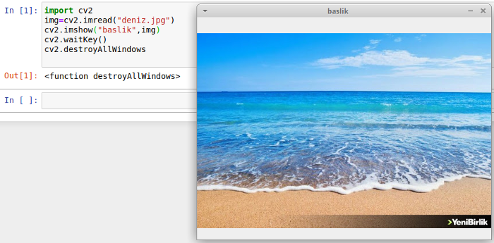
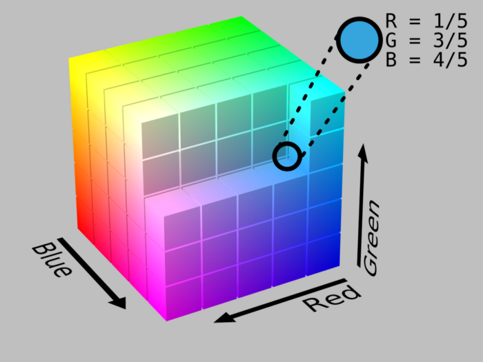
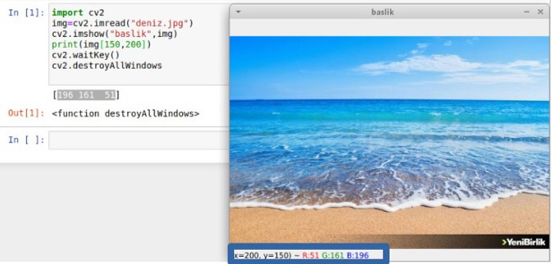
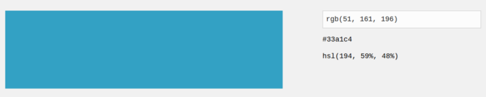
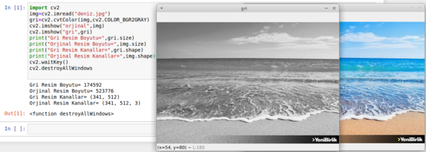

OpenCV Nedir?
OpenCV (Open Source Computer Vision) 1999 yılında geliştirilmeye başlanmış açık kaynak kodlu görüntü işleme kütüphanesidir.İlk başta C programlama dili ile geliştirilmeye başlanmış daha sonra birçok algoritması C++ ile yazılmıştır. Kütüphane çapraz platformlu ve açık kaynaklı BSD lisansı altında kullanım için ücretsizdir.
OpenCv yüzleri ve nesneleri algılama ve tanıma, videolarda insani eylemleri sınıflandırma, kamera hareketlerini ve hareketli nesneleri izleme, nesneleri 3 boyutlu modellerine ayıklama ve stereo kameralardan 3D nokta bulutları üretme, görüntüleri yüksek çözünürlükte birleştirme gibi alanlarda başarılı olarak kullanılır.
OpenCV Nasıl Kurulur?
OpenCV Python’ın dahili kütüphaneleri ile birlikte gelmez harici bir şekilde kurmamız gerekir.Bunun için bilgisayarımızda terminal ekranını açıp.
>pip3 install opencv-python
Komutu çalıştırdığımızda kütüphane kullanıma hazır olacaktır.
Kütüphanenin düzgün çalıştığını kontrol etmek için bir Python editörü açıp.
import cv2
Kodununu çalıştırdığımızda hata almıyorsak kurulum başarılı bir şekilde tamamlanmıştır.
Eğer PIP Paket Yöneticisi kurulu değil ise çok kısa iki adımla kurabiliriz ilk olarak https://bootstrap.pypa.io/get-pip.py adresinden get-pip.py adlı dosyayı indirmek ardından terminal ekranını açarak.
GNU/Linux için
>python3 get-pip.py
Windows için
>py get-pip.py
Komutlarını çalıştırarak kurulumu tamamlayabiliriz.
Resim Okuma Açma ve Yazma
OpenCV bir görüntü işleme kütüphanesi bundan ötürü biz de resimler,videolar ve canlı görüntüler ile çalışacağız.İlk olarak resimden başlayım.
İlk olarak OpenCV kütüphanesini import edelim
import cv2
Resim dosyalarını imread(resim_yolu) fonksiyonu ile okuyacağız burada dikkat etmemiz gereken resim yolunu tam ve doğru şekilde yazmak eğer resim ile betik dosyamız aynı dizin içerisindeyse direkt resmin adını parametre olarak verip resmimizi okuyabiliriz.
img=cv2.imread(“resim_adi.jpg”)
Ancak farklı dizinlerde ise resim yolunu tam olarak yazmamız gerekir.
img=cv2.imread(“/home/selman/İndirilenler/resim_adi.jpg”)
Artık img değişkenine bir resim atamış olduk şimdi bu resmi nasıl açacağız bakalım.
Okuduğumuz resimleri açarken imshow(pencere_basligi,degisken ) fonksiyonu ile resimleri açabiliriz.Parametre olarak ilk parametremizde resim açıldığında yeni bir pencerede açılacağı için bir başlık girmemiz gerekir,ikinci parametremiz ise imread() fonksiyonu ile resmi atadığımız değişkeni girmemiz gerekir.
cv2.imshow(“resim baslık”,img)
Eğer bu şekilde kodu çalıştırır isek bir anda açılıp kapanan bir pencere göreceğiz bunun için ise iki fonksiyon var ilki waitKey(tuş) klavyeden bir tuş basmamızı beklerken destroyedAllWindows() açılan penceredeki “x” işaretine basıldığında OpenCV’ye bağlı pencereleri kapatır.

İşlediğimiz resimleri yazdırabilmek için imwrite(“yeniresim.jpg”,degisken) fonksiyonunu kullanırız.
cv2.imwrite(“yeniresim.jpg”,img)
BGR Mantığı ve Renk Kanalları
İlk olarak renk, nesne tanımayı, nesnenin görüntüden çıkarımını kolaylaştıran bir tanımlayıcıdır. İkinci olarak ise insanlar yalnızca gri tona kıyasla binlerce renk tonunu ve yeğinliğini ayırt edebilir.BGR renk uzayında renkler 3 renkten oluşur sırasıyla Mavi(Blue),Yeşil(Green) ve Kırmızı(Red) renkleridir.3 renk bize 3 kanalı ifade eder her kanal 8 bit olmakla beraber 0 ile 255 arası değer alırlar bu değerlerin yoğunluğu bize rengi verir.

Şimdi bir img değişkenine bir resim atayalım ve 150. satır 200. sütunda ki değerleri inceleyelim.Dikkat etmemiz gereken bir şey OpenCV resimleri matris olarak gördüğü için ilk satır sonra sütun değerlerini girmemiz gerekir.


Gördüğümüz üzere görüntü 3 kanallı her kanalın 8 bit olduğu pikseller den oluşuyor.Ancak görüntü işlerken daha fazla performans daha fazla bellek alanı isteriz,3 kanallı bir resmi tek kanala düşürmek yani siyah beyaz bir görüntü elde etmek bize aynı oranda bellek kazancı sağlar şimdi bunu renkli bir görüntüyü gri hale çevirelim farkları inceleyelim.Tek kanala düşürmek için iki yöntem kullanabiliriz bunlar imread(“resim_yolu”,0) imread() fonksiyonuna ikinci parametre olarak 0 değerini vermek ikincisi ise cvtColor(degisken,cv2.COLOR_BGR2GRAY) fonksiyonunu kullanmak.

Resim Boyutlarına bakıldığında tam 3 kat fark görmekteyiz kanala baktığımızda ise gri resimde teke düştüğünü görüyoruz.